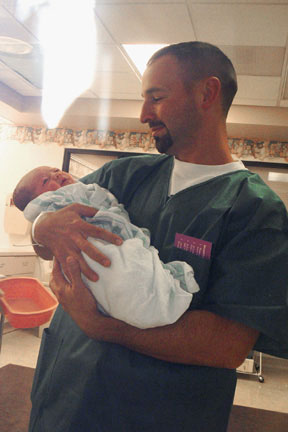
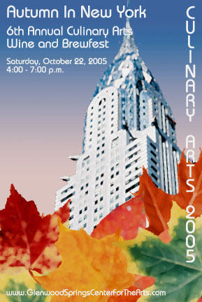

Home :
What's New (Blog) :
2005 Archive
The only real downside to the Epson is that it is tall, very tall, it fits in my rack but it is a bit tight, too tight in some ways. Sucker is heavy too - 75lbs! The HP has some nice features, a built in card reader, a shorter design, and the ability to fax direct from your computer. Still, I had to go by quality, price, and time. Hopefully Epson will update their drivers to improve the features a bit - at the least they're not as bloated as HP's tend to be!
I don't print that often, but hopefully those cartridges will last a good while. At least these won't dry out like the old inkjet cartridges did all the time. So for the first time there's an Epson printer back in the family since very first printer we ever had - an Epson FX-80 9-pin dot matrix printer. The CX11NF shares the brand, hopefully it'll share the longevity.
Hopefully my Vonage stuff will arrive tomorrow - after that I'm done with the hardware upgrades, for now.
Well, lately I've been working on switching my phone service over Vonage. So far it has been interesting. I've got my firewall prepped and am looking forward to receiving my equipment sometime this week. Qwest decided they were going to screw up or something and prematurely (the same day I signed up) push my phone number over to Vonage. It took a while to get hold of a suport rep at Vonage who knew his ass from a hole in the ground who could tell me what was going on. I can only hope this isn't typical of what kind of service can be expected from Vonage. Still, not like Qwest is really well known for competent service either. Since then Qwest redirected my phone number back to my landline. I hope when they time does come when it needs to be moved they'll do so without delay or conflict.
I figure if this Vonage thing does falls through I'd transfer my number over to my cell provider and up my minutes.
I've also been thinking very seriously about replacing my printer. Right now I have an OfficeJet T45 and my biggest peeve with it is that the cartridges keep clogging since I don't print very often. When I want a good print out, I want a good print out! I've been thinking of going with the HP 2840 or the Epson CX11NF. C|Net liked the HP while PC Magazine liked the Epson - both have plusses and minuses, the Epson is quicker, quieter, and cheaper while the HP is more compact, mature, and has more options. So to settle that score I plan to go to Staples sometime and print out a couple of my pictures on both to see which one does a better job. It's an investment so I need to pick something that fits my needs.
Oh well, least now it works in Konqueror/Safari get pull down menus - I do care about my Mac/KDE visitors! Though if you're using IE for Mac - you should seriously jumping over to Safari or Firefox. IE/Mac is a dead product that's no longer being developed and improved.
There's one thing I really enjoy about this time of year - Christmas Parties. The WestStar Christmas party was nice - 4 Eagle Ranch did their usual splendid job of providing great food in an interesting atmosphere. I enjoyed the "after hours meeting" in Glenwood more though. Smaller crowd, more personable and didn't involve a trip all the way out to Wolcott.
On the Christmast note - Just got all my Christmas cars out yesterday.
On flash keys - all I have to say is San Disk - GRR! OK first I have my San Disk 1GB card crap out on me at a really really bad time, now to follow that up I've had no less than 2 San Disk Titanium Flash keys die. It has now been replaced with a Kingston. I miss the metal housing the San Disk keys had but I prefer the keys be 100% reliable. No so sure I'll ever buy anything San Disk again.
Tom and I just switched our web stats program over to AWStats. Before we were running Webalizer. Webalizer was good, but it looks for all intents and purposes to be a dead product (no more development on it). AWStats has some really nice features for a freeware web stats program so after showing Tom he implemented it. After a couple more tweaks I can now get a better picture who's visiting this site, with what, and when. The only reason why I didn't consider Google's program is because 1 - it won't work with this site due to the XML request framework and 2 - Tom happens to work for Yahoo.
On to VOIP - Been very seriously thinking of switching my telephone over to Vonage or someone. Qwest isn't offering what I want, my landline is virtually unused 99% of the time due to the fact I have to pay Long Distance charges to call most people I know. I find this ridiculous in this Internet age! That and the fact Qwest doesn't even offer VoiceMail in this area?!?! What's up with that? So, I might be making the jump to Vonage and praying that Comcast doesn't suffer another catastrophic outage like they did a couple of months ago. If they do, at least I'll have my cell.
Hard to believe we're only 1 week away from Christmas. I have 2 Christmas wishes and neither can be found in stores. Either way, I'm working twards making those wishes and dreams come true.
This is my Niece, Kayla - The family's resident ultra-cute blonde haired 3 year old terror. It was quite educational being around her since she's now 3 years old. She talks a lot and is a lot more fun to interact with now but the downside is that being a 3 year old every other parental demand turns into a battle with her. Yep, a typical 3 year old.
Still, it's hard not to get a warm smile when I hear her still saying "Uncle Dave, Uncle Dave!". Man she's got a lot of energy.. oof. I ran and chased her around a bit but every time I did sit down from doing that she was always requesting "Do it again! Do it again!!" How can a person have that much energy? Hmm, what I need to find is a toy that will safely let her run herself to the point of absolute exhaustion that also teaches - I think they call that one the holy grail of kids toys... Still, it is fun to chase her around while she's laughing and giggling the whole time. I even managed to surprise her pretty good - got a nice shriek out of her.
Nevan, my baby Nephew is doing most of what babies do at that age... eat, sleep, poo, cry and look cute most all the time while doing it. He's quite the smiler, so either that means he's very happy or, if he's like his dad, up to something. Time will tell as he grows and more of his personality comes out. He seems pretty laid back about most things until it's feeding time.
This is one of the best pictures I got during my time down there. I just like it! It's cute and has a touching side to it between a father and a baby son. A simple moment frozen in time that says a lot emotionally.
We also had the chance to take Rob's quad bike out for a spin. There's a bit more to driving that thing than I would've guessed. I would like to get one for myself someday but I just need to see what all develops around here before increasing my expense base. I'd rather take a quad bike over some of these trails than my 4Runner. The 4Runner is a very capable stock vehicle but it's also my daily driver so trashing it would be a Bad Thing.
The range was fun - It had been a long time since I had been to the range with Rob and Holly. Rob is a pretty good shot. I'm pretty decent but I would like to be more consistent with my 40. It was interesting comparing my 40 compared to my Dad's (now Rob's). Can't say one is better than the other since each has tradeoffs and I'm no master. Regardless we had fun and that's all that matters. Afterwards we went out for sushi and Rob and I ended up getting into a macho wasabi eating contest. :-)
This week I'll have the chance to get with some family during Thanksgiving. Definitely looking forward to it. Was cute talking with little Kayla and asking her if she was going to get her room cleaned for mom and I to which she answered "Yeah!" in her little voice. My brother simply asked "Can I get that in writing?". Should be fun seeing her again and meeting Nevan for the first time.
So my Thanksgiving is pretty well filled, now I just need to get something going for Christmas!
Earlier this week I hand the chance to meet Bobby Julich who placed 3rd in the Tour De France one year. He was a competitor to Lance. Now that Lance is retired (or at least says he was) hopefully Julich will have his chance to stand in the spotlight. He's a nice guy and originally from Glenwood - a hometown hero of sorts!
Michele told me that they're definitely wanting me to do the Glenwood Springs Center For the Arts web site, that project should be interesting. I'm looking forward to it since it is somewhat high exposure. Wanting to do a great job on this one! Nothing as fancy is my personal site, but still quite nice and easy for them to do their own updates to.
Winter is starting to reassert its grasp on the mountains here in Colorado. I went to Denver last night for a date and a nice sushi dinner over at Sonodas. The drive back up was a bit rough. Between the Eisenhower tunnel and Silverthorn the road was a complete mess in the eastbound lane of I70. The westbound lane was mostly clear save a few minor messes here and there. My 4Runner got through it with hardly a problem - was only going ~40-45 MPH most of the way. Winter driving is a heck of a lot easier in the 4Runner compared to my old 89 Mazda B2200 I used to have. 4WD, ABS, and Stability and Traction Control make a world of difference.
On a different note, I picked up a copy of BattleFront II. Interesting game so far. It's fun, but I was expecting the flight portions to be more like XWing or Tie Fighter than they are - the flying portions on the game are very arcade like. It's not too bad though, the graphics are great. It is fun playing as a Jedi/Sith on some of the ground battles. The thing is it's hard to avoid wiping out large swathes of your fellow team members when using them. I think when I play it online I'll be sure to be far away from anyone who gets a Jedi/Sith for fear of being wiped out either deliberately or on accident.
The Culinary Arts Festival was quite a success. One thing I'm pleased about is that my fellow committee members really liked my shots I took at the event. The photos should come in quite handy next year. Good chance I'll do the posters for next year too. I've had a number of ideas rattling around in my head as to what I would like try.
One thing I like about this time a year: the ghost story TV shows. I've always liked the real ones myself since they combine history with the paranormal. Most Haunted is interesting, but the problem is they don't go out of their way to disprove what they see and the crew is rather excitable. Frankly I think they're faking a good bit of it, it ends up being sensationalistic drivel. Ghost Hunters or TAPS on Sci-Fi is more like it, they have a much more scientific approach to it and the stuff they are unable to explain or invalidate is much more concrete and interesting. I hope they're renewed for next season - I think it would be great if the Ghost Hunters crew would get the chance to go to the UK and really check things out.
The UK has some amazing ghost stories to go along with its rich history - I remember this story from back in 2003 - that one was on the AP Newswire!
On the Dinner & A Date front it would seem that out here it can be hard to get people to follow through on a verbal commitment. Oh well, Rhonda (the person heading up Dinner & A Date) and I were able to put some of the finishing touches on the logo I've been working on and the results are quite nice. She's now using it on her event business cards and stationary and I believe it makes a world of difference in terms of providing that professional polish that will hopefully attract more singles to the event. I saw this as a win-win. I win because it gets more people going to this thing, she wins for the same reasons. With luck we'll both get what we want!
The 14th by contrast had pretty nasty weather, fit the mood well enough I suppose - cold, blowing, rainy, gray day. That day has to rank as one of the longest days I had seen. I often found myself openly wondering why couldn't we have had that weather on the 13th? Alas, what had happened happened and nothing could reverse the events of the previous day.
N177GS
Since then so much has happened, changes in everyone's life - babies born, marriages, laughter and tears - life moves on as I have. I miss him and always will. I miss sharing life's everyday triumphs and tragedies, hearing his wisdom and insights on things, and sharing my love of technology with him.
My Uncle Jack finished the paint job on his Cessna Cardinal that they were to be working on that day. The result of their work is just beautiful as you see here. Jack changed the N-Number of the Cardinal - it used to be N34505, now it is now N177GS, as in Cessna 177 Gene Snyder. I can't think of a more fitting tribute to the person who was my father and shared his love of flight with so many people in his life.
Some day I will perhaps become a pilot and be the 3rd generation of Snyder pilots. Not quite yet - not enough time or money to pursue that just now, and it has to be for the right reasons. That is not an endeavor taken lightly, especially out here in the mountains where lack of planning, research, and skill will kill you. I have to become a pilot when I want to fly for me and nobody else, when it makes sense for me.
On a brighter note, next weekend is the Culinary Arts Festival! Looking forward to that. Having fun and chasing a dream.
After that I looked at Rainbow portal. Rainbow is an interesting product too. This one does have roles but from what I've seen you can't give a given user control over an entire page, instead you can give them control over a portal within a page. It's odd. Not exactly what I would've expected. Still, it seems closer to the mark on that than DNN was.
Just the same somehow by the end of the year I have to get WestStar's intranet done in one form or another. In the mean time I plan to continue looking into various content management systems. Hopefully not having to make my own...
On a different note, definitely looking forward to the 22nd and the Culinary Arts Festival! Should be great fun!
Today I took my A/C units down for the winter. Cooler air is starting to creep back in.
So I ended up having to redo the document generation section using Rich Textd Format (RTF). RTF is a text based format, but it's a bit tricky to write, let alone have it machine generated. Safe to say I know a bit more about RTF than I did earlier this week thanks to the crash course from hell. One side benefit is RTF generation is much faster than Word ever was. That said, I think I'd rather avoid having to do RTF generation ever again.
On a different note, found out quite quickly that spammers often like to exploit web form parsers. One tried on my form. Fortunately I caught it pretty early and made a quick fix to stop it cold! Ended up spending a good portion of my evening hardening my form against being abused in this fashion. Live and learn but it goes to show once again that spammers are evil, vile, selfish people who only care about making a fast buck on everyone else's dime.
A side benefit of adding this contact form is it allows me to get my phone numbers and email addys off the site. Not that I have anything to hide, but a little privacy helps. And besides, going through the form is easier than sending an email.
Next up is getting a form working that posts through the XML request system.
One of my projects at work lately has involved making a Word document with ASP. I think the politest thing that could be said about drawing a table in Word is it sucks. The interface isn't exactly easy to program for - in fact it's cumbersome. Nevertheless it'll be done but not without some brain damage telling Word how to move the stupid cursor around. It would've been far more sane to do it similar to the way the DOM does it - create a table and assign whatever attributes you want.
The back story on that is a good friend of mine here in town invited me to design the posters and such for the Culinary Arts Festival earlier this year. Normally I don't do print, but she described a simple photo rendering - easy enough to do, sign me up. When the first meeting came up to discuss it in earnest came up I discovered the plans had be totally changed. I admit I actively had to resist the temptation to flee, I wanted to - especially when they said the theme was "Autumn in New York". Uh, well, problem is 1. I've never been to NYC and 2. NYC is a city, outside of central park I haven't seen too many tree pictures.
I tried for hours to emulate some artwork they liked. I wasn't having much success coming up with something I particularly liked, so I decided I was going to throw all that away and simply go with what I know and what I do best. I decided the best way to do that was iconically - the Chrysler Building is about as iconic as they come in NYC. I went with it instead of the Empire State building because it's more interesting looking (I think it's prettier too) and a lot of people would readily recognize it. So I grabbed a nice stock photo of it, and gathered various leaf pictures, heavily applied some effects to them give it a watercolorish look placed them all together and viola, fall leaves over the Chrysler building - says "Autumn in New York" if you ask me...
Fortunately my little brainstorm was well received by the group when I submitted my first draft. Just yesterday we got cards got back from the printer and it looks amazing. I'm very, very pleased with the way it came out. Definitely something I need to add into my portfolio. Haven't added to that in ages.
I hope to add more content a bit later as I think of things and time permits.
At the least I plan to keep this page up to date.
Since then, might be easier to say what hasn't changed.
Anyway, moving forward, obvoiusly this site is new. If you're more curious about it and it's internal workings and so on I recommend you visit my Personal Sites Page.
Next Month >>


What's New (Blog)
12.25.2005 - The Day After Christmas
Well, I ended up surprising myself - I solved my printer question today. I took my notebook over to Staples and did some side by side comparison between the HP 2840 and the Epson CX11NF. The Epson trounced the HP on price, performance, and quality. The Epson is about 4x faster and the printouts were much better.The only real downside to the Epson is that it is tall, very tall, it fits in my rack but it is a bit tight, too tight in some ways. Sucker is heavy too - 75lbs! The HP has some nice features, a built in card reader, a shorter design, and the ability to fax direct from your computer. Still, I had to go by quality, price, and time. Hopefully Epson will update their drivers to improve the features a bit - at the least they're not as bloated as HP's tend to be!
I don't print that often, but hopefully those cartridges will last a good while. At least these won't dry out like the old inkjet cartridges did all the time. So for the first time there's an Epson printer back in the family since very first printer we ever had - an Epson FX-80 9-pin dot matrix printer. The CX11NF shares the brand, hopefully it'll share the longevity.
Hopefully my Vonage stuff will arrive tomorrow - after that I'm done with the hardware upgrades, for now.
12.25.2005 - Have Yourself A Merry Little Christmas
I had a wonderful time at Michele's Christmas party last night. Good food and great company!Well, lately I've been working on switching my phone service over Vonage. So far it has been interesting. I've got my firewall prepped and am looking forward to receiving my equipment sometime this week. Qwest decided they were going to screw up or something and prematurely (the same day I signed up) push my phone number over to Vonage. It took a while to get hold of a suport rep at Vonage who knew his ass from a hole in the ground who could tell me what was going on. I can only hope this isn't typical of what kind of service can be expected from Vonage. Still, not like Qwest is really well known for competent service either. Since then Qwest redirected my phone number back to my landline. I hope when they time does come when it needs to be moved they'll do so without delay or conflict.
I figure if this Vonage thing does falls through I'd transfer my number over to my cell provider and up my minutes.
I've also been thinking very seriously about replacing my printer. Right now I have an OfficeJet T45 and my biggest peeve with it is that the cartridges keep clogging since I don't print very often. When I want a good print out, I want a good print out! I've been thinking of going with the HP 2840 or the Epson CX11NF. C|Net liked the HP while PC Magazine liked the Epson - both have plusses and minuses, the Epson is quicker, quieter, and cheaper while the HP is more compact, mature, and has more options. So to settle that score I plan to go to Staples sometime and print out a couple of my pictures on both to see which one does a better job. It's an investment so I need to pick something that fits my needs.
12.19.2005 - Minor Tweaks
Just made a tiny adjustment to the scripts on this site to fix Konqueror/Safari to handle the pull-down sub menu correctly (even though it still doesn't properly support the clipping CSS attribute). I had made a change earlier to keep the pull-down from triggering during the animation sequence in IE and Firefox and messed up Konqueror/Safari by doing that. I wish I could give Konqueror/Safari the full DHTML treatment but it doesn't quite support certain necessary technologies as well as the others browsers do just yet.Oh well, least now it works in Konqueror/Safari get pull down menus - I do care about my Mac/KDE visitors! Though if you're using IE for Mac - you should seriously jumping over to Safari or Firefox. IE/Mac is a dead product that's no longer being developed and improved.
12.18.2005 - Christmas Parties, VOIP, and Flash Keys
Been at least a couple of weeks since I've last updated this! Got slack on that..There's one thing I really enjoy about this time of year - Christmas Parties. The WestStar Christmas party was nice - 4 Eagle Ranch did their usual splendid job of providing great food in an interesting atmosphere. I enjoyed the "after hours meeting" in Glenwood more though. Smaller crowd, more personable and didn't involve a trip all the way out to Wolcott.
On the Christmast note - Just got all my Christmas cars out yesterday.
On flash keys - all I have to say is San Disk - GRR! OK first I have my San Disk 1GB card crap out on me at a really really bad time, now to follow that up I've had no less than 2 San Disk Titanium Flash keys die. It has now been replaced with a Kingston. I miss the metal housing the San Disk keys had but I prefer the keys be 100% reliable. No so sure I'll ever buy anything San Disk again.
Tom and I just switched our web stats program over to AWStats. Before we were running Webalizer. Webalizer was good, but it looks for all intents and purposes to be a dead product (no more development on it). AWStats has some really nice features for a freeware web stats program so after showing Tom he implemented it. After a couple more tweaks I can now get a better picture who's visiting this site, with what, and when. The only reason why I didn't consider Google's program is because 1 - it won't work with this site due to the XML request framework and 2 - Tom happens to work for Yahoo.
On to VOIP - Been very seriously thinking of switching my telephone over to Vonage or someone. Qwest isn't offering what I want, my landline is virtually unused 99% of the time due to the fact I have to pay Long Distance charges to call most people I know. I find this ridiculous in this Internet age! That and the fact Qwest doesn't even offer VoiceMail in this area?!?! What's up with that? So, I might be making the jump to Vonage and praying that Comcast doesn't suffer another catastrophic outage like they did a couple of months ago. If they do, at least I'll have my cell.
Hard to believe we're only 1 week away from Christmas. I have 2 Christmas wishes and neither can be found in stores. Either way, I'm working twards making those wishes and dreams come true.
11.28.2005 - Thanksgiving With The Family
Back in town after my little Thanksgiving excursion to Arizona. Was great spending some time with the family.{kind=link}
This is my Niece, Kayla - The family's resident ultra-cute blonde haired 3 year old terror. It was quite educational being around her since she's now 3 years old. She talks a lot and is a lot more fun to interact with now but the downside is that being a 3 year old every other parental demand turns into a battle with her. Yep, a typical 3 year old.
Still, it's hard not to get a warm smile when I hear her still saying "Uncle Dave, Uncle Dave!". Man she's got a lot of energy.. oof. I ran and chased her around a bit but every time I did sit down from doing that she was always requesting "Do it again! Do it again!!" How can a person have that much energy? Hmm, what I need to find is a toy that will safely let her run herself to the point of absolute exhaustion that also teaches - I think they call that one the holy grail of kids toys... Still, it is fun to chase her around while she's laughing and giggling the whole time. I even managed to surprise her pretty good - got a nice shriek out of her.
Nevan, my baby Nephew is doing most of what babies do at that age... eat, sleep, poo, cry and look cute most all the time while doing it. He's quite the smiler, so either that means he's very happy or, if he's like his dad, up to something. Time will tell as he grows and more of his personality comes out. He seems pretty laid back about most things until it's feeding time.
This is one of the best pictures I got during my time down there. I just like it! It's cute and has a touching side to it between a father and a baby son. A simple moment frozen in time that says a lot emotionally.
{kind=link}
We also had the chance to take Rob's quad bike out for a spin. There's a bit more to driving that thing than I would've guessed. I would like to get one for myself someday but I just need to see what all develops around here before increasing my expense base. I'd rather take a quad bike over some of these trails than my 4Runner. The 4Runner is a very capable stock vehicle but it's also my daily driver so trashing it would be a Bad Thing.
The range was fun - It had been a long time since I had been to the range with Rob and Holly. Rob is a pretty good shot. I'm pretty decent but I would like to be more consistent with my 40. It was interesting comparing my 40 compared to my Dad's (now Rob's). Can't say one is better than the other since each has tradeoffs and I'm no master. Regardless we had fun and that's all that matters. Afterwards we went out for sushi and Rob and I ended up getting into a macho wasabi eating contest. :-)
11.20.2005 - Skis and More
Wow, glad I had my bindings checked! Turns out they were way out of wack on the loose side. Better than being too tight I suppose but there's always the danger of popping out and eating something. Either way I'm ready to go, all I need is lots of snow!This week I'll have the chance to get with some family during Thanksgiving. Definitely looking forward to it. Was cute talking with little Kayla and asking her if she was going to get her room cleaned for mom and I to which she answered "Yeah!" in her little voice. My brother simply asked "Can I get that in writing?". Should be fun seeing her again and meeting Nevan for the first time.
So my Thanksgiving is pretty well filled, now I just need to get something going for Christmas!
Earlier this week I hand the chance to meet Bobby Julich who placed 3rd in the Tour De France one year. He was a competitor to Lance. Now that Lance is retired (or at least says he was) hopefully Julich will have his chance to stand in the spotlight. He's a nice guy and originally from Glenwood - a hometown hero of sorts!
Michele told me that they're definitely wanting me to do the Glenwood Springs Center For the Arts web site, that project should be interesting. I'm looking forward to it since it is somewhat high exposure. Wanting to do a great job on this one! Nothing as fancy is my personal site, but still quite nice and easy for them to do their own updates to.
11.13.2005 - Ski Pass
Getting ready for ski season, getting my skis tuned, got my pass for Sunlight Mountain this year. Back to the beginning - I originally learned at Sunlight when I moved out here. The next year I got a pass for Vail, then last year I went to Aspen/Snowmass. The problem with the other two is the drive was rather long. When I skied at Sunlight the first year, I skied the most that year. Plus I like the ambience and feel to the place. Though their lifts are not great - at the least they should have that footrest bar on them.Winter is starting to reassert its grasp on the mountains here in Colorado. I went to Denver last night for a date and a nice sushi dinner over at Sonodas. The drive back up was a bit rough. Between the Eisenhower tunnel and Silverthorn the road was a complete mess in the eastbound lane of I70. The westbound lane was mostly clear save a few minor messes here and there. My 4Runner got through it with hardly a problem - was only going ~40-45 MPH most of the way. Winter driving is a heck of a lot easier in the 4Runner compared to my old 89 Mazda B2200 I used to have. 4WD, ABS, and Stability and Traction Control make a world of difference.
On a different note, I picked up a copy of BattleFront II. Interesting game so far. It's fun, but I was expecting the flight portions to be more like XWing or Tie Fighter than they are - the flying portions on the game are very arcade like. It's not too bad though, the graphics are great. It is fun playing as a Jedi/Sith on some of the ground battles. The thing is it's hard to avoid wiping out large swathes of your fellow team members when using them. I think when I play it online I'll be sure to be far away from anyone who gets a Jedi/Sith for fear of being wiped out either deliberately or on accident.
10.30.2005 - Almost November
Man this month flew by. It was a busy one at that. Rather pleased with the way the intranet project has turned out at work. The little home-rolled content management system I created for the Internal newsletter was ported into the new intranet quite easily. Well on schedule to get it launched. Some of the other internal tools we have were a bit more tricky, but for the most part it's good to go.The Culinary Arts Festival was quite a success. One thing I'm pleased about is that my fellow committee members really liked my shots I took at the event. The photos should come in quite handy next year. Good chance I'll do the posters for next year too. I've had a number of ideas rattling around in my head as to what I would like try.
One thing I like about this time a year: the ghost story TV shows. I've always liked the real ones myself since they combine history with the paranormal. Most Haunted is interesting, but the problem is they don't go out of their way to disprove what they see and the crew is rather excitable. Frankly I think they're faking a good bit of it, it ends up being sensationalistic drivel. Ghost Hunters or TAPS on Sci-Fi is more like it, they have a much more scientific approach to it and the stuff they are unable to explain or invalidate is much more concrete and interesting. I hope they're renewed for next season - I think it would be great if the Ghost Hunters crew would get the chance to go to the UK and really check things out.
The UK has some amazing ghost stories to go along with its rich history - I remember this story from back in 2003 - that one was on the AP Newswire!
10.24.2005 - A Busy Weekend
I definitely had fun at the Culinary Arts Festival this past weekend, for all intents and purposes it looks like it was a roaring success. They had hundreds of people sampling some of the cuisine from the local restaurants and trying the various wine and brews from the vendors. It looks like everyone there had fun and the event went off without a hitch. The room was absolutely packed!On the Dinner & A Date front it would seem that out here it can be hard to get people to follow through on a verbal commitment. Oh well, Rhonda (the person heading up Dinner & A Date) and I were able to put some of the finishing touches on the logo I've been working on and the results are quite nice. She's now using it on her event business cards and stationary and I believe it makes a world of difference in terms of providing that professional polish that will hopefully attract more singles to the event. I saw this as a win-win. I win because it gets more people going to this thing, she wins for the same reasons. With luck we'll both get what we want!
10.14.2005 - 2 years ago...
Hard to believe that two short years ago this day I was in Indiana, in shock having just lost my father. The 13th had beautiful weather, good enough for Dad to decide to ride a bike to the Boone County Airport in Indiana that day. He pushed himself too hard and died as a result. It was sudden, unexpected, abrupt, rude, and on the whole just a shock - he was gone in a flash without warning or faintest hint of what was to come.The 14th by contrast had pretty nasty weather, fit the mood well enough I suppose - cold, blowing, rainy, gray day. That day has to rank as one of the longest days I had seen. I often found myself openly wondering why couldn't we have had that weather on the 13th? Alas, what had happened happened and nothing could reverse the events of the previous day.
N177GS
My Uncle Jack finished the paint job on his Cessna Cardinal that they were to be working on that day. The result of their work is just beautiful as you see here. Jack changed the N-Number of the Cardinal - it used to be N34505, now it is now N177GS, as in Cessna 177 Gene Snyder. I can't think of a more fitting tribute to the person who was my father and shared his love of flight with so many people in his life.
Some day I will perhaps become a pilot and be the 3rd generation of Snyder pilots. Not quite yet - not enough time or money to pursue that just now, and it has to be for the right reasons. That is not an endeavor taken lightly, especially out here in the mountains where lack of planning, research, and skill will kill you. I have to become a pilot when I want to fly for me and nobody else, when it makes sense for me.
On a brighter note, next weekend is the Culinary Arts Festival! Looking forward to that. Having fun and chasing a dream.
10.07.2005 - Portals
Recently I've been studying freeware portals for ASP/ASP.Net. DotNetNuke looked quite robust, but the big problem with it was that its user management doesn't seem all that granular. No roles for users and from what I've seen, no way to delegate control to specific pages to specific users.After that I looked at Rainbow portal. Rainbow is an interesting product too. This one does have roles but from what I've seen you can't give a given user control over an entire page, instead you can give them control over a portal within a page. It's odd. Not exactly what I would've expected. Still, it seems closer to the mark on that than DNN was.
Just the same somehow by the end of the year I have to get WestStar's intranet done in one form or another. In the mean time I plan to continue looking into various content management systems. Hopefully not having to make my own...
On a different note, definitely looking forward to the 22nd and the Culinary Arts Festival! Should be great fun!
Today I took my A/C units down for the winter. Cooler air is starting to creep back in.
9.22.2005 - The Pain...
OK, my little idea about invoking Word to create a document via ASP is now officially a Bad Idea. Oof! Getting close to deployment time I discovered much to my chagrin that instantiating Word via ASP is very problematic and generally not recommended. I'll never do that again...So I ended up having to redo the document generation section using Rich Textd Format (RTF). RTF is a text based format, but it's a bit tricky to write, let alone have it machine generated. Safe to say I know a bit more about RTF than I did earlier this week thanks to the crash course from hell. One side benefit is RTF generation is much faster than Word ever was. That said, I think I'd rather avoid having to do RTF generation ever again.

Rob and Nevan
Rob and Nevan
9.14.2005 - A New Arrival
Nevan G Snyder, my nephew was born 9.13.2005 at 6:02pm at Chandler Regional Hospital. Pretty big baby - 22" 8lbs 10oz. Quite an exciting time having a new nephew now.On a different note, found out quite quickly that spammers often like to exploit web form parsers. One tried on my form. Fortunately I caught it pretty early and made a quick fix to stop it cold! Ended up spending a good portion of my evening hardening my form against being abused in this fashion. Live and learn but it goes to show once again that spammers are evil, vile, selfish people who only care about making a fast buck on everyone else's dime.
9.09.2005 - Forms
Got the XML form up and running and like the rest of this site it's dual-function. If you have a capable browser, it will post through its XML system, otherwise it'll just do a standard form post. That way my browser-challenged audience isn't totally left in the dark.A side benefit of adding this contact form is it allows me to get my phone numbers and email addys off the site. Not that I have anything to hide, but a little privacy helps. And besides, going through the form is easier than sending an email.
9.08.2005 - Little Polishes
Adding little tweaks here and there to harden this site against catastrophic failure in the event it gets something that gags it through the XML request system. Before, whenever a bad request was made, it would choke. Now it won't do that - it shows an error message on screen. Not pretty, but it beats blowing up or doing nothing at all.Next up is getting a form working that posts through the XML request system.
9.07.2005 - So far, So good
So far so good - a couple of folks found a minor bug with IE which seems only only occur whenever it's pulled up over http. Fixed. IE has some screwball way of inserting more into the hyperlink than what's actually there - link itself says myfile.html, but IE sees http://host/myfile.html. Weird, and damned annoying - I asked it to simply look at what's there, not assume anything...One of my projects at work lately has involved making a Word document with ASP. I think the politest thing that could be said about drawing a table in Word is it sucks. The interface isn't exactly easy to program for - in fact it's cumbersome. Nevertheless it'll be done but not without some brain damage telling Word how to move the stupid cursor around. It would've been far more sane to do it similar to the way the DOM does it - create a table and assign whatever attributes you want.

Autumn In New York
The Culinary Arts Festival Poster/Collateral ProjectAutumn In New York
The back story on that is a good friend of mine here in town invited me to design the posters and such for the Culinary Arts Festival earlier this year. Normally I don't do print, but she described a simple photo rendering - easy enough to do, sign me up. When the first meeting came up to discuss it in earnest came up I discovered the plans had be totally changed. I admit I actively had to resist the temptation to flee, I wanted to - especially when they said the theme was "Autumn in New York". Uh, well, problem is 1. I've never been to NYC and 2. NYC is a city, outside of central park I haven't seen too many tree pictures.
I tried for hours to emulate some artwork they liked. I wasn't having much success coming up with something I particularly liked, so I decided I was going to throw all that away and simply go with what I know and what I do best. I decided the best way to do that was iconically - the Chrysler Building is about as iconic as they come in NYC. I went with it instead of the Empire State building because it's more interesting looking (I think it's prettier too) and a lot of people would readily recognize it. So I grabbed a nice stock photo of it, and gathered various leaf pictures, heavily applied some effects to them give it a watercolorish look placed them all together and viola, fall leaves over the Chrysler building - says "Autumn in New York" if you ask me...
Fortunately my little brainstorm was well received by the group when I submitted my first draft. Just yesterday we got cards got back from the printer and it looks amazing. I'm very, very pleased with the way it came out. Definitely something I need to add into my portfolio. Haven't added to that in ages.
9.05.2005 - Launch Day
Looks like all the new content is in and all the bugs ironed out - time to show the world what I've been staring at now for over a month!I hope to add more content a bit later as I think of things and time permits.
At the least I plan to keep this page up to date.
9.04.2005
Wow, well, the last time I got around to updating anything content wise on my web site was 2.19.2003! Yeesh, that's too long to say the least!Since then, might be easier to say what hasn't changed.
Anyway, moving forward, obvoiusly this site is new. If you're more curious about it and it's internal workings and so on I recommend you visit my Personal Sites Page.
Next Month >>